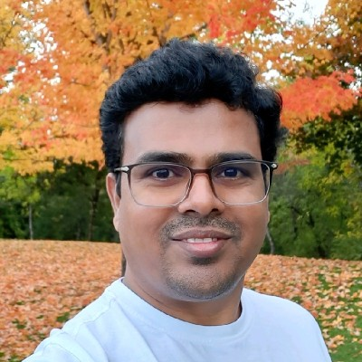

AI & Intelligent Products
AI-enabled product experiences, applied AI capabilities, and AI-assisted software engineering.
Engineering Leader | AI & Cloud Architecture | Distributed Systems
I build scalable software platforms and solve complex engineering problems. With 23+ years in software engineering, including more than a decade at Microsoft, I focus on distributed systems, platform capabilities, architecture, and technical leadership.

A career shaped by building reliable systems, enabling engineering teams, and evolving platforms to meet changing business needs.
I am a software engineering professional with more than 23 years of experience designing and building scalable applications, distributed systems, and platform capabilities. My experience includes more than a decade at Microsoft, working on complex engineering challenges in large technology environments.
I enjoy connecting architecture and implementation: setting technical direction, making thoughtful engineering trade-offs, and helping teams deliver solutions that are secure, maintainable, and built to scale.
My professional interests include AI-enabled products, AI-assisted engineering, cloud-native platforms, and the next generation of developer productivity tools.
Areas of focus across software platforms and engineering teams.
AI-enabled product experiences, applied AI capabilities, and AI-assisted software engineering.
Architecture for scalable applications, clear service boundaries, maintainability, and long-term evolution.
Designing reliable systems that address scale, resilience, performance, and operational complexity.
Cloud-based platforms and reusable capabilities that help product and engineering teams move faster.
Technical standards, code quality, architecture reviews, pragmatic delivery, and continuous improvement.
Setting technical direction, mentoring engineers, and partnering across teams to deliver outcomes.
Engineering experience across software, platforms, and large-scale technology environments.
Worked on complex engineering challenges, with a focus on scalable software, distributed systems, platforms, and technical leadership.
I'm interested in thoughtful conversations about engineering leadership, AI-enabled products, scalable platforms, and challenging technology problems.